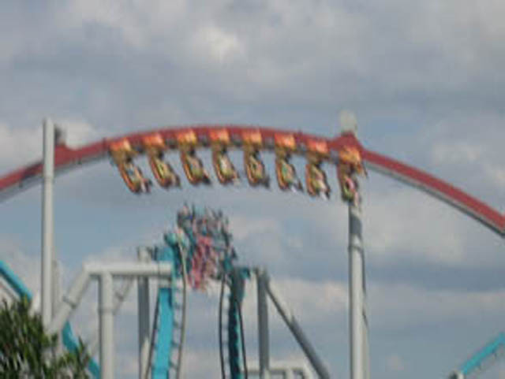
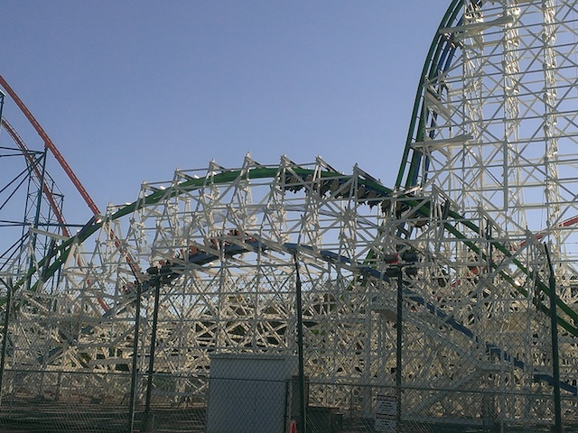

| |

Dueling Dragons (Ice) Editorial & Review

All right. So I've reviewed a lot of different roller coasters. I've reviewed roller coasters that NOBODY, including myself, gives a crap about. I've reviewed tiny little kiddy coasters in these puny little Family Entertainment Centers, solely because I've pretty much reviewed every single coaster that I've ridden. Granted, those reviews are pretty much copied and pasted with the only tweaks being changing the location, and the stats for each ride. And the review takes about 2 minutes to make. I can listen to an average radio-length song and finish the review before the song ends. But still. That's two minutes dedicated to a crappy ride I only rode for the sake of credit whoring before never reading that review again. So why am I bringing that up? Mainly to make the point that I review A LOT of different roller coasters. The park reviews that I do for Incrediblecoasters are without a doubt, the most popular things I do, and while it's true that I'm a very small website and this is all done as a hobby (True, I have made ad money from the site, but not NEARLY enough to make Incrediblecoasters my career). The fact that if you google something like...Six Flags Magic Mountain Review, my review of it is on the front page. Hell, it's the #6 result! The only things beating out my Six Flags Magic Mountain review are Tripadvisor, Yelp, a video by Coaster Studios, Theme Park Insider, Theme Park Review, and then me. Incrediblecoasters. And it's not just Six Flags Magic Mountain. Nearly all my park reviews are either on the front page, the 2nd page if it's a more popular park. They continously rank up high if you google "Insert Theme Park Here" Reviews. The only parks where I don't rank are Disney Parks and Universal Parks, because those are such major tourist destinations, that so many people are covering them, that I get drowned out. Aside from a handful of my most successful videos on Youtube, they are the most popular things I've written.
"OK! Stop!" some of you are probably saying right now. "I didn't click to read about you talking about your own reviews! I came to read about Dueling Dragons! Why are you talking about how your reviews are written?".
 "STOP!!! JUST STOP!!!"
"STOP!!! JUST STOP!!!"
The reason I brought up everything regarding my reviews is because...this is going to be a different kind of review. Normally, my reviews give a detailed summary of all that the ride does, tell some jokes, if it's a racing or dueling coaster, I scream out some stupid shit where I act overly aggresive and hostile about something as silly as coaster racing, and just scream at all the people on the other side of the train, before giving out a summary of the ride, and either recommending the ride to readers, or telling them that the ride I'm reviwing sucks and that they should avoid the ride. And while I will do that in this review, there's A LOT that we have to talk about before we can do that.
Now this may seem like there isn't a lot to talk about. Dueling Dragons was two coasters. They were demolished. I've reviewed several coasters that have been demolished. I put up the tombstone photo (BTW, I'm going to redo that one of these days. It's terrible looking and this site deserves better. Not sure when, as...it's low on my priority list, but I will create a new tombstone photo for defunct coasters. Oh, and I'm going to make a special Dueling Dragons tombstone photo just for these two rides), I put everything in past tense as the review is now in the past, and maybe say a sad thing if it was a particularly good ride. Why does Dueling Dragons have to have all this talk about it?
However, I'm sure you know that there are two types of coasters that are worth going into extreme detail about. The worst rides ever and the best rides ever. And Dueling Dragons together were some of the best rides ever. Seriously, these things were on my Top 10 Steel Coasters List for about a year. However, it lost its spot when Universal essentially decided to neuter the ride in 2011. As many of you know, Dueling Dragons was two really good B&M Inverts that dueled with one another. Yes, the two Inverts were a ton of fun on their own, which is why I still really appreciated the ride, even when neutered. However, it was the dueling that took this ride from really good, into world class and propelled it way up in my Top 10 Steel Coasters list. Now, if Dueling Dragons had never been neutered, it likely would've still fallen off the list simply due to all the great new rides, though it might still be holding on in the lower half possibly. But yeah. Universal Orlando argued that the ride had to be neutered due to a few loose items. OH COME THE FUCK ON!!!! EVEN SIX FLAGS MAGIC MOUNTAIN CAN DUEL TWISTED COLLOSUS WITHOUT ANY ISSUES!!! OK, there are the issue of operations and how you generally don't duel due to poor operations and the trains not lining up. But you still CAN duel on Twisted Collosus. You can get lucky and still do all the cool stuff that the ride was designed to do, whereas Universal didn't just stop trying to make Dueling Dragons duel. No, they went above and beyond in making sure that these rides NEVER dueled, sometimes delaying the ride SOLELY to ensure that they never dueled, doing essentially, the opposite of what the ride was intended (When it first opened, if there were operating problems, the first Dragon would stop and wait for the other dragon to catch up so they could duel). Yeah, Universal neutering Dueling Dragons was the first snowball that led to the avalanche of my issues that I have with Universal Orlando.

"Hey. I may not quite be dueling here, but AT LEAST I'M FUCKING TRYING UNIVERSAL ORLANDO!!!"
"AT LEAST I'M FUCKING TRYING!!!"
The next thing that helped create the Universal Avalanche was in 2015 when they went absolutely apeshit and developed a fetish for security theater. Universal had always been strict with loose items, but it had always been...standard. But then they developed the No Zippered Pocket rule. FUCK YOU!!! Seriously, I fucking HATE the bullshit about nothing in zippered pockets. ZIPPERS ARE SECURE!!! DO WHATEVER!!! THEY WILL NOT FALL OUT!!! DO YOU NOT KNOW HOW ZIPPERED POCKETS WORK!!? Hearing parks argue that zippered pockets are a threat makes me want to blast the You Are An Idiot virus song at them (though to be fair, I want to blast that song at so many people. After 2016, it should probably be our national anthem). But anyways, the zipper bullshit is infuriating, but it's not just Universal that perpetuates it (Tivoli Gardens, I love you, but the zipper crap is fucking embarassing for you guys). But that's not enough. For Universal Orlando installed METAL DETECTORS for all of the rides!! Every time you want to ride the Incredible Hulk or Rockit, you have to go through metal detectors. ARE YOU FUCKING KIDDING ME!!? I know I've complained about Security Theater in past updates (Just a quick rehash. Security Theater is a series of pointless pain in the ass measures that don't make you safer, but trick gullible people into thinking that they are now safer), but the Security Theater was all just to get into the park. Ugh. Annoying. Stupid. But whatever. But when you have to go through metal detectors EVERY SINGLE TIME you want to ride a roller coaster, it's going to make you angry. And of course, they also have those stupid fucking wands that they wave down on you every time you get in line. And of course, I've heard that they are all extremely rude about the whole ordeal. Sure, I'm sure there are some nice ones #NotAllUniversalSecurityGuards, but look at me! I'm talking about the TSA! I'm talking about the fucking TSA! Except I'm boarding a roller coaster! Not an airplane! And I hate airport security, and all that security theater. But at least the reasoning behind that bullshit was logical! Planes were flown into skyscrapers, causing the biggest terrorist attack ever, and killing 3,000 people. That's the reason we're we told need the bullshit security theater for airplanes. Here, you might lose your phone. It'll almost certainly just shatter on the ground in a restricted area somewhere, and if not, those nets will likely grab it. And on top of that, it's SECURITY THEATER!!! IT'S NOT GOING TO WORK!!!! At least with airport security, it's part of just a misreable experience. Get up early, do the security theater bullshit, spend hours on a plane to fly across the country (or across the ocean), and yadi yada. Here, you're at an amusement park. You're supposed to be getting AWAY from the bullshit!!! Not having to endure it every time you want to ride the roller coaster. It's around this time that Universal lost its spot on the Top 10 Theme Parks List.
 This is a random photo I found of some dude getting groped by Airport Security.
You'll likely experience something very similar if you want to ride a roller coaster here.
This is a random photo I found of some dude getting groped by Airport Security.
You'll likely experience something very similar if you want to ride a roller coaster here.
However, in September of 2017, Universal Orlando pretty much commited the ultimate sin, and they got rid of Dueling Dragons, which pretty much was the nail in the coffin. Parks get rid of roller coasters very frequently. But usually, they get rid of something crappy, or recently, the trend is to tear down their old and busted wooden coaster, and turn it into a hot new RMC, which are now officially everywhere. True, a couple of those wooden coasters, I liked and found to be good rides. But their RMC replacements have always been better. Plus, many of those demolished coasters aren't even gone. They just moved on to another park. There have even been many instances of parks tearing out beloved rides that pisses off coaster enthusiasts. For instance, Blackpool Pleasure Beach recently just demolished their Wild Mouse. And no, their Wild Mouse wasn't just yet another standard generic Wild Mouse. This was an old classic wooden mouse that was apparently crazy. Now, I've never been to Blackpool Pleasure Beach. But it makes me sad that I'll never get to ride that ride. But ultimately it's mainly just enthusiasts that care about it being demolished.
"You see Kevin? This isn't a big deal. Universal Orlando did nothing wrong. This is just a bunch of roller coaster nerds getting mad over silly roller coaster nerdiness. Nobody who isn't a roller coaster enthusiast cares about this. So shut up and get over it."
Actually hypothetical anonymous asshole I created as a representative of all the actual anonymous assholes on the internet, this isn't just coaster enthusiasts who are angered about this decision. The general public is unhappy with this decision! And I don't just mean Orlando locals! The majority of everyone that I've heard about the news about Dueling Dragons dissaproved. Hell, my cousin, who is NOT a roller coaster enthusiast AT ALL, but she does travel a lot, and rode it when she and some friends went to Universal Orlando, because that really is a major park that attracts people in the same way Disney does, and when she heard that it was torn down, she was saddened to hear about that. And from what I heard, this was the case with the majority of NON-COASTER ENTHUSIASTS!!! Of course, coaster enthusiasts are generally more upset about this since....we're coaster enthusiasts! Roller coasters are sort of our schtick. And I don't think ANY other enthusiast is going into this much detail about the demolition of these two coasters as I am. But hey. These were some of the best coasters in the entire industry. So to have the park just throw away these universally loved rides, I'm sorry. This is the dumbest and worst park decision ever.
Now prior to this, the worst park decision technically wasn't even a theme park decision. It was Wild Rivers closing down (FUCK YOU IRVINE COMP!!!). That decision to bulldoze the best water park in California angered me. It deeply angered me, to the point where whenever I mention Wild Rivers, I ALWAYS will give a "FUCK YOU IRVINE COMP!!!". I always say that whenever Wild Rivers is brought up (FUCK YOU IRVINE COMP!!!). Now, Wild Rivers didn't just choose to close for their own good. Irvine Comp is the company that destroyed Wild Rivers and built the houses that now sit on top of its grave. As you can clearly see, I don't like Irvine Comp. I think that's pretty obvious just by how often I scream "FUCK YOU" at them. But this Dueling Dragons decision, that's so bad that it even makes Irvine Comp's judgement seem not as bad! Congratualations Universal Orlando! You're getting me to defend FUCKING IRVINE COMP!!!
 Fuck you Irvine Comp.
Fuck you Irvine Comp.
No. I'm not going to now always "FUCK YOU UNIVERSAL ORLANDO!!!" whenever Dueling Dragons is brought up in the same way I always say "FUCK YOU IRVINE COMP!!!" whenever people talk about Wild Rivers (FUCK YOU IRVINE COMP!!!). However, I do want to give out a good "FUCK YOU UNIVERSAL ORLANDO!!!" for all this. Fuck you for all the stuff I mentioned earlier, but ESPCIALLY FUCK YOU for this. I think the ONLY time I ever was hostile to a park and literally said "FUCK YOU!!!" to them on social media was when this was announced. No, I'm not going to boycott Universal. I'm not even going to try. They simply have too much for me to go back for. I'm not going to forgoe Rockit, or those water rides. It's too big to just completely write off. I mean, if they got rid of the in-park TSA for everything, I'd still really enjoy the park. However, this is going to leave a scar. Even if they get rid of the TSA, operations were great, all that fun stuff, the removal of Dueling Dragons will ALWAYS be noticed. The replacement for the ride would literally have to blow me away, and the rumors I've heard don't appear that they're even going to try. It's just going to be more Harry Potter stuff. UGH.
All right. So I've explained the whole situation with Dueling Dragons. 9 paragraphs in, and I've detailed all the bullshit that led to these two amazing B&Ms unfairly leaving Universal Orlando. Most people are against it. However, there have been arguments from some coaster enthusiasts that this was unavoidable and had to have happened. Many of these enthusiasts are my friends, and I have no issue with them. But...I'm going to attack both of these main arguments that are used. There's the argument that they had to do it for maintanence reasons, and I address that argument in my review of Dueling Dragons Fire. And then there's the Harry Potter argument, which I'm going to tackle right here in the Dueling Dragons Ice review, right down below.
So the main argument the Harry Potter people have is that Harry Potter is so massive, such a monsterous cash cow, that Universal simply had to bulldoze Dueling Dragons in order to accomadate all the new Harry Potter stuff. First of all, this pretty much implies that the two are simply incompatable. Oh come on! They totally could've just kept the Dragon Challenge theme, incorporated the Harry Potter theme, and if they didn't do the anti-dueling bullshit, really turned it into this sort of competition! Make it something like a Quidditch match! Make it the Wizard version of Dog Fighting! Would that mean that we wind up going to Azkaban for this illegal dragon fighting just like people to prison for illegal dog fighting in the real world. I find it hilarious that people are making this into a choose one or the other.
 I know this meme was everywhere and then died because that's how all fucking memes are. But seriously! SERIOUSLY!!!
I know this meme was everywhere and then died because that's how all fucking memes are. But seriously! SERIOUSLY!!!
All right. So I might as well discuss my views on the Wizarding World of Harry Potter, as well as my views on the Harry Potter franchise in general. Just get it all out of the way so you know where I'm coming from.
As far as the franchise goes...I like it. I don't love it, but I like it. I read all the Harry Potter books, and I like them. They're far from my favorite books, but they still were a good read. And that goes for the movies as well. They were very well made, and they managed to take 7 incredibly successful books and turn them into 8 good and entertaining movies. I enjoyed watching every single Harry Potter movie. However, I have the same thing to say about Harry Potter, as I do about Star Wars, or the Marvel movies, or whatever else has a really major franchise. That is to say, I enjoy the franchise. I enjoy the movies and all that good stuff, however, when you compare me to the diehard fans, it's clear that I don't belong there. I'm the general public of Harry Potter. The die hard Potterfans, who obsess over everything, put themselves in the house, have debates about the characters, dress as them for cosplay, have quidditch matches, they look at me as the General Public. I'm a muggle to them. Even the rest of my family, while not as diehard as people who post reguarly to Pottermore, are major Harry Potter fans, but they don't go this far. And the same goes for Star Wars, Marvel Films, etc. The closest I come to a media fandom would be Disney, as I really love the animated Disney/Pixar films (well, most of them), Disney parks are freaking awesome (Well no shit sherlock. You're a coaster enthusiast and a theme park lover! Of course you're going to love Disney parks!), Disney cruises are a ton of fun, and will admit that I sometimes watch silly fun Disney fan theories sometimes (Oh, and they also do Star Wars & Harry Potter theories). But when you compare my love of Disney to the die-hard fans, I PALE in comparison. I don't constantly go to the Disney parks, I don't visit sites like Micechat, and while I'm a big Disney fan, and a little bit of a Disney nerd, some people really go above and beyond. Roller coasters are my shtick, and Disney is theirs.
These people are Harry Potter nerds, but hey. I'm a coaster nerd. And they look like they're having fun. Enjoy your quidditch match Potterheads.
All right. That's my thoughts on Harry Potter as a franhise. Now what are my thoughts on the Wizarding World of Harry Potter? Well, I haven't been to Universal Orlando since 2007, so the Wizarding World of Harry Potter didn't exist when I was there. I have however, visited the Wizarding World at Universal Studios Hollywood. And I'm assuming this mostly applies to Florida's Potterland. So how's California's Harry Potterland? Not bad. It's pretty cool. They have Flight of the Hippogrith, which is a fun ride. Forbidden Journey managed to grab a spot on our Top 10 Dark Rides List (at least it did at the time of writing this). The wand show is cool, though it's still amusing that this exact wand just so happens to be the perfect wand for literally everyone they pick for this show. And the whole place is very well themed. I like how they bring all the cool stuff from Hogsmade to life. So I enjoyed it, and yeah. All the Potterheads are freaking orgasming over this. So it's not my favorie thing ever, but it's a cool area that's well themed. And that's the California one. The Orlando one has a couple more rides, and a Diagon Alley for more wand stuff. All the more reasons for Potterheads to orgasm.
 Hey. It's actually really well themed.
Hey. It's actually really well themed.
Now let's talk about the other big reason that Universal is so obsessed with Harry Potter. Star Wars. You see, Since Disney bought out Lucasfilm back in 2012, they've been pushing Star Wars more and more into their parks. Hell, both Disneyland and Disney World are working to build Star Wars land in Tommorowland in California, and somewhere in MGM Studios in Florida. And boy, oh boy. They are MILKING it. They are milking the shit out of their Star Wars property, doing all that they can to rope in those Die-hard Star Wars nerds, all those people who go to cons, who camp out for each Star Wars film, they're creating a whole new world out just for them. And with Universal already having the Wizarding World of Harry Potter in Florida back then, they decided to go all out, not only adding Harry Potter to the other Universal parks, but adding even more to their existing Harry Potter land. And when you consider that Harry Potter is one of the few things that Disney doesn't own now (With Disney buying out FOX, how is that going to affect stuff like say...The Simpsons Ride?), it makes sense for them to invest in the Wizarding World of Harry Potter. However, there is one little tiny difference between Disney and Universal. Disney didn't tear down their star attraction in an effort to make room for more Star Wars stuff. Yes. Disney does want to add more Star Wars stuff. They want to grow and expand. However, Disney was smart enough to realize "Hmm. Should we tear down Space Mountain? We'd have more room for Star Wars stuff that way. Oh wait. No. That would be fucking stupid." I'd argue that suggesting that Disneyland would do such a thing is a strawman argument and stupid. Except...that's exactly what Universal did.
 We may have Star Warsified one of our most popular rides, but at least we wern't stupid enough to think "We should tear this down for more Star Wars shit!".
We may have Star Warsified one of our most popular rides, but at least we wern't stupid enough to think "We should tear this down for more Star Wars shit!".
But hey. You're a die-hard Potterhead and this Harry Potter expansion just had to happen! The Wizarding World of Harry Potter is your true love, and you stand proud of whatever house you're in. It must be expanded and Dueling Dragons be damned! You want to see that new attraction, whatever it is, and there was no other place to put the ride other than right in the Dueling Dragons spot! Oh wait. What's that? There were other spots? Yes. If they wanted, they could've took the space that is occupied by both Posideon's Fury and the Eigth Voyage of Sinbad. What are those rides? I've never heard you mention either of these rides in your Universal Review. That's mainly because...these aren't exactly popular rides. Posideon's Fury and Sinbad are both park shows that aren't super popular (Hell, Sinbad is rated one star on it's own freaking website!). Now it may be easy to think that two shows can't take up much space. However, it's not just these two shows! It's an entire freaking land! The Lost Continent. Yep. Both of these things are the last remaining bits of the Lost Continent that wasn't turned into Harry Potter. Now I personally enjoyed the Lost Continent and wasn't exactly crazy about it turning into Harry Potter. However, what they did leave behind was the scraps. All the good stuff got absorbed into the Wizarding World of Harry Potter. Rather than finishing what they started and taking the last little bits of the Lost Continent, the little bits they couldn't Potterize, the scraps, bulldoze it, and build whatever cool new Harry Potter stuff you want, and you have yourself a new and better Wizarding World of Harry Potter, people move away from the Lost Continent, and everything is for the better. But nope. They instead go down the road of "Duh! Maybe we should tear down our star attraction. I know we have all this room right there being contained by attractions that aren't even popular and just are the leftover chunks of a once-kickass land that we just turned all the good parts into Harry Potter! No! That'd be smart! We have to bulldoze the best ride here! Yeah! We have to do that because...Duh! I was dropped as a baby!" Ugh. Fuck you Universal. Fuck you and your idiocy.
All right. One final thing to mention that I've heard may have influenced this horrible decision. JK Rowling. Uh...what? How the hell does the woman who wrote the Harry Potter have to do with any of this? Well, JK Rowling cares A LOT about her creation. She cares about the Harry Potter franchise with an iron fist. She was heavily involved in pretty much everything Harry Potter related. When it came to the Harry Potter movies, that was good. They were very faithful to the books, and very good adaptations. With the Harry Potter world in Universal, not so much. While I've only heard this as speculation and there has never been any confirmation about this, but from what I've heard, JK Rowling HATED Dueling Dragons and wanted them gone, and that if it wasn't for her, they'd still be here today. WHAT!!? FUCK YOU BITCH!!!! >=( Seriously, FUCK YOU FOR THAT!!!! JK Rowling has gotten a lot of shit over the years, and I've always defended her from the attacks she's recieved.
There's the Christian Fundamentalists who hate her because Harry Potter is a series about wizards, magic, witchcraft, and stupid reasons like that. There's no point in defending JK Rowling from these people because these people are not only batshit crazy, but also just terrible human beings. They helped put a fascist manchild in the White House, and they tried putting a slavery apologist pedophile in the Senate (Hey. It turns out that even Alabama has SOME standards). All of these Christian Fundamentalists can go die in a ditch.
Deplorables hate her because she tweeted that Voldemort isn't as bad as Donald Trump and threatened to burn their Harry Potter books and movies because of it. Hey. JK Rowling is completely right in the comparison! One of those villians is a fictional character from a book and movie franchise. The other one is sadly a real person causing great damage to not only the country, but the entire world. I 100% stand with JK Rowling here. Plus, she's pissing off Deplorables. Double points for that.
A lot of people hate her because she got in a fight with PewDewPie via Twitter and argued that fascism is not edgy, and linking to an article that claims that PewDiePie is a Nazi and that his jokes are not funny or edgy. Now PewDiePie is NOT a Nazi. I may not like PewDiePie. I may think he's one of the most overrated people on Youtube. I may agree that his dark Holocaust jokes, or him saying the N Word, is not funny or edgy. PewDiePie is NOT an edgy guy. Or a funny guy. I don't like PewDiePie. But he's NOT a Nazi. He may have told dark jokes that I personally didn't find funny. But I'VE told dark offensive jokes with friends that I'm sure many would also find not funny. Dark Jokes do NOT make one a Nazi. We have a serious problem with Nazis in America right now. They have been empowered, they are a growing threat, confident enough to march in public and murder someone, Fuhrer von Fuckface then says some of those Nazis are "very fine people" (FUCK YOU!!!) and that there's blame on both sides. We're bad at recognizing fascists, we're bad at fighting them (No, not by punching them. I may agree that these people may be the most punchable bastards on the planet, but it's still wrong to actually punch them. Not only because punching people is wrong, even the most terrible, loathsome, and awful people, but it's also a bad strategy). It's troubling, because times are really dark right now, terrible people are in power, Nazis are empowered, and these monsters need to be stopped, and I don't want the waters being muddied by throwing in shitty unfunny Youtubers who tell stupid offensive jokes to be lumped in there.
Oops. Went off on another tangent. I get easily distracted, and that's something that desperately needs to be said. Back to J.K Rowling (Who herself, is a tangent, when this is supposed to be about Dueling Dragons. How the hell did I get from discussing Dueling Dragons to discussing the seriousness of Nazis in America!? Tangentception! Shit! I'm doing it again! Stop getting so distracted! SQUIRREL!!!). Anyways, with that whole statement, how the hell am I defending JK Rowling. While I certainly disagree with the idea that PewDiePie is a Nazi and muddying the waters and crying wolf is not helpful, the backlash JK Rowling wasn't just "You're wrong. Try and improve your fascist-detection skills". No, the internet fucking CRUCIFIED her for this. They demonized her, and constantly photoshopped her as a Nazi. Seriously, you people are assholes. So I may not agree with what JK Rowling said, I agree with her intentions. And fuck the people photoshopping her as a Nazi. You're not helping and you don't care about muddying the waters.
Finally, there's been some controversy from the other side as some people got angry at her for depicting Skinwalkers in a post on "Magic in North America" on Pottermore, arguing that it's insensitive to Native Americans and cultural appropriation. A concept with good intentions (Respecting and acknowledging minority cultures is good) that's badly executed (Dictating stuff, like what types of hairstyles certain people can wear etc, is bad. You're allowed to like things). Now I'm not Native American, but I do support incorporating other myths and fictional creatures into your own fictional story (Sorry. Skinwalkers aren't real). You're allowed to like things. So I stand with JK Rowling here.
So for all of these things that people have been attacking JK Rowling from, I've defended her. She hasn't been someone I've really thought about because...why would I? I like Harry Potter, but I didn't think about JK Rowling anymore than I thought about George Lucas for creating Star Wars. But suddenly, when hearing that JK Rowling might possibly have played a role in the worst theme park decision ever, suddenly, I'm against her and have the same disdain as the people from up above.
 JK Rowling, you're a really good author. But please stay the fuck away from the theme park world. You do NOT make good decisions here.
JK Rowling, you're a really good author. But please stay the fuck away from the theme park world. You do NOT make good decisions here.
So yeah. They totally had the room for the Harry Potter expansion and this might possibly only be happening due to JK Rowling demanding it (Fuck you), and yeah. That makes me angry. But I'm sure you got the gist of that throughout the entire...talk about the coasters removal. Now I'm sure some of you will still be talking about how this had to be done for maintanence reasons, and I go into the Maintanence argument in my Dueling Dragons Fire Review. HOLY SHIT!!! THIS IS A ROLLER COASTER REVIEW!!! Sorry, I kind of forgot as it's pretty much just become a big essay on the removal of Dueling Dragons, as yeah. It's a big deal and I'm airing out all my thoughts on that bullshit right here and in the Fire review. But don't worry. The time has come. So sit back. Let's go back in time to when Dueling Dragons was still running, it was still dueling, and I had nothing but fawning praise for Universal Orlando. It's time to review Dueling Dragons Ice.
We're here at the Universal Orlando Resort to ride Dueling Dragons. After walking through the beautifully themed line, we reach a sign that says "Choose thy fate." We decided to head on over and make Ice our fate. After pulling down the shoulder harness, the floor drops and away we go. Once we reach the lifthill, we meet up with our enemy. Fire Dragon. While going up the lifthill, we scream to the people on Fire "Hey you!! Like playing with Fire? Well eat this!!!!!" After shouting that, you go and spray them all with fire, shake fists at each other and declare yourselves enemies. The Coaster Duel has begun. Once we reach the top of the lifthill, we flip off the people on Fire Dragon before heading our separate ways. We then twist to the left into the first drop. We get quite a lot of speed off that first drop and are now having a lot of fun. We then twist up into a big curve. During this turn, we get a nice view of Fire's Immelmann and of some buildings. Then we rise straight back down towards the water. We then rise up into a Heartline Spin. And like most heartline spins, the one on Ice Dragon is completely awesome. But while you're in your heartline spin, Look up. Your enemies are right above you. And they're getting floater air too. Quick. Before they get away, go and steal their shoes and prove yourselves worthy before it's too late. We then drop back down and twist a little before rising up into a cobra roll. But as you're going up, you have to watch out for that wall that those evil bastards on Fire Dragon built to try and defeat you. You barely make it and are now upsidedown. As we twist to the right back right side up, we see the Evil Fire Bastards. So we scream "REVENGE!!!!!" and head straight into the second half of the cobra roll. After flipping back down, we race off and kill those at Fire Dragon. We then notice that they are going to flip up in a loop. Quick. Let's copy them and show them up!!! We then flip upsidedown in a vertical loop and are now ready to go and defeat them by trying to kick their feet and make them suffer, but we flip upsidedown in the vertical loop before we can make that happen. We then head back towards the ground and then slam straight into a turn. This turn is quite forceful and really whips us through it. We must go off and find Ice so we can make them suffer. We then flip into a corkscrew to attract Fire. But as we flip into our corkscrew, we then realize that those bastards on Fire have stolen our idea. We must fight now, in the corkscrew. We go off and scream "GO FORTH AND DIE!!!!!!" in a blind rage before we twist out of our corkscrew. We then twist into another turn and say to ourselves "I think I've made those bastards on Fire suffer enough today." You then pull out of that turn and fly straight towards home. But as we head home, we see those Fire Bastards go through a corkscrew to try and piss us off. But all you can say is "That is so immature and pathetic." We then roar straight through a turn and glide straight into the brake run. Now unlike in Coaster Racing, Coaster Dueling has no winners or losers. You just go and kick each others asses. And we showed those Fire Bastards what Ice is made of, so we're good for now. I would TOTALLY recommend riding this if you are at the Universal Orlando Resort as not only is coaster dueling fun and awesome, but Ice Dragon is a damn good B&M Inverted Coaster. R.I.P Dueling Dragons. And one final fuck you to Universal Orlando.
8/10
Location: Universal Orlando Resort
Opened: 1999
Murdered: September 4, 2017
Built by: B&M
Last Ridden: November 20, 2007
Dueling Dragons (Ice) Photos


Home
|